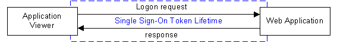
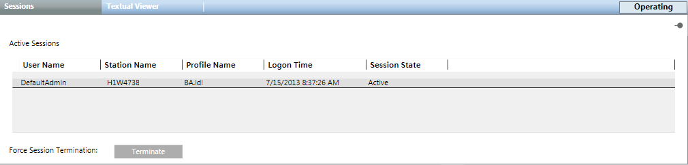

Additional User Administration Procedures
Prerequisites
- System Manager is in Operating mode.
- System Browser is in Management View.
- Project > System Settings > Users is selected.
Configure Session Timeout
- Select the Extended Operation tab.
- Select the Session Timeout property.
a. The Session Timeout property shows the current value (Default: 10 min). Session timeout is a connection test between the server and the client and takes place every 30 seconds. The session is closed after the set period, if disconnected.
b. Click Apply.
Configure Single Sign-On Token Lifetime
The Single Sign-On Token Lifetime property defines the maximum accepted logon (not for every request) response time for creating a connection between the Application Viewer and a web application. In other words, if the Application Viewer sends a request to a web application, such as the BIRT server, the application has to respond within the set period of time. The request expires if there is no response within the set period.

- Select the Extended Operation tab.
- Select the Single Sign-On Token Lifetime property.
- The Single Sign-On Token Lifetime property displays the current value (default: 3 min).
- Enter the new value.
- Click Apply.
Display Active User Sessions
- Select the Sessions tab.
- All active sessions display with User Name, Station Name, Profile Name, Logon Time, and Session State.
- (Optional) Select a session and click Terminate to close an active session.

Set Domain Name for Logon
The domain name needs to be set once when first logging onto Desigo CC.
- Click the Extended Operation tab.
- Select the Default Domain Name property.
a. Enter the domain name, for example, DomainName\UserName.
b. Click Apply.